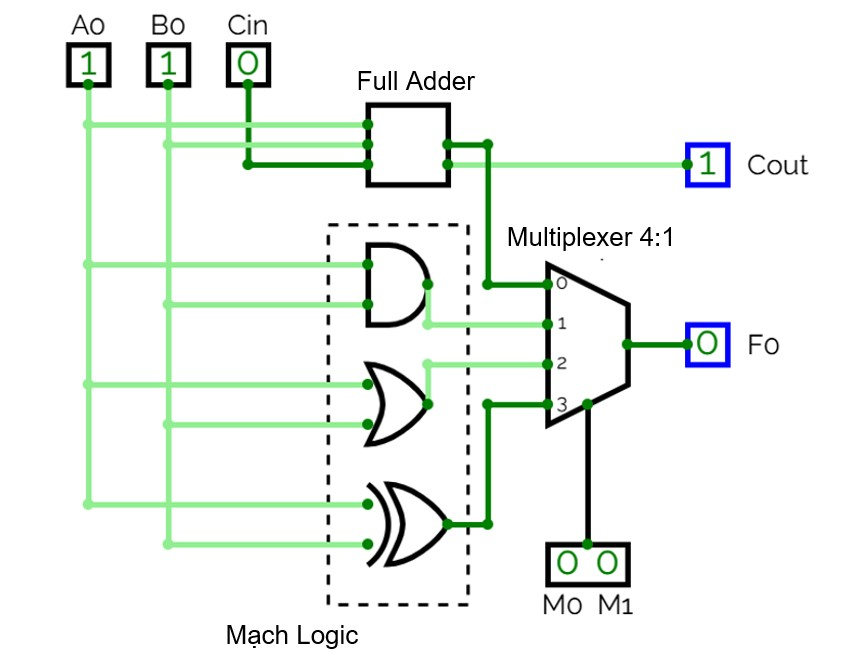
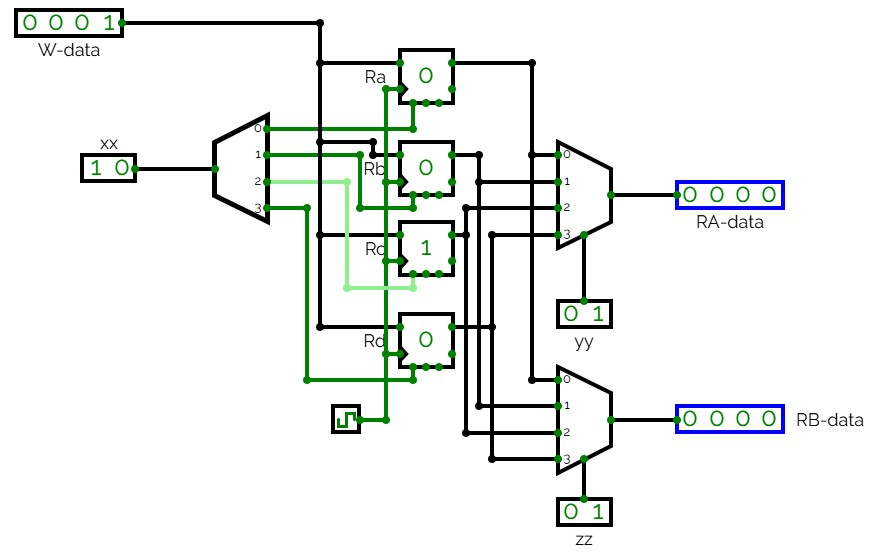

Nội dung các bài thực hành
Các bài thực hành sau đây giúp sinh viên hiểu rõ về cấu trúc và hoạt động của CPU thông qua các mô phỏng
trực quan trên nền tảng web. Trình mô phỏng CircuitVerse cho phép sinh viên khám phá các thành phần trong
CPU MIPS, như bộ điều khiển, ALU, bộ thanh ghi, bộ nhớ và bus dữ liệu, thông qua sơ đồ mạch logic, từ đó
nắm vững cách các thành phần này phối hợp và dữ liệu di chuyển trong quá trình thực thi.
Các bài thực hành Kiến trúc máy tính
-
Bài 1: Thiết kế và Mô phỏng đường đi dữ liệu (Datapath) trong CPU với ALU 1-bit

Chú thích:
- Ao, Bo → Toán hạng 1, Toán hạng 2
- Full Adder → Bộ cộng toàn phần
- Multiplexer 4:1 → Bộ đa hợp dữ liệu 4:1
- Mạch logic → Các phép toán AND, OR, XOR
- Cin, Cout → Bit nhớ vào, Bit nhớ ra
- Fo → Ngõ ra kết quả
- Mo, M1 → Tín hiệu chọn kênh
Hoạt động của mô hình ALU 1-bit trong thiết kế đường đi dữ liệu của CPU
- A0 = 1, B0 = 1: hai toán hạng đầu vào.
- Cin = 0: bit nhớ đầu vào (Carry-in).
- M0 = 0, M1 = 0: tín hiệu điều khiển chọn chức năng tại MUX (bộ chọn đầu ra).
Tiến trình hoạt động
- Bước 1: Thực hiện phép toán
- Với M0 = 0, M1 = 0, MUX chọn đầu vào tương ứng với phép cộng.
- ALU thực hiện phép tính: A0 + B0 + Cin = 1 + 1 + 0 = 10 (nhị phân).
- Bước 2: Xuất kết quả
- Fo = 0: bit kết quả (bit thấp).
- Cout = 1: bit nhớ ra (bit cao) – do phép cộng tạo ra kết quả lớn hơn 1 bit.
Kết quả đầu ra
- Fo = 0: là kết quả phép toán logic hoặc số học tại đầu ra chính của ALU.
- Cout = 1: là bit nhớ (Carry-out) được chuyển tiếp khi mở rộng ALU lên nhiều bit.
Nhận xét
- Mô hình là phần cơ bản của khối Execution Unit (EU) trong CPU, thể hiện hoạt động của một ALU
1-bit thực hiện phép toán logic và số học.
- MUX giúp lựa chọn đầu ra theo điều khiển M0-M1, minh họa vai trò quyết định của bộ điều khiển
trong CPU.
- Cout thể hiện chức năng quan trọng của bit nhớ khi kết hợp nhiều ALU 1-bit thành ALU 4, 8 hoặc 16
bit, cho phép xử lý các phép cộng/phép toán phức tạp hơn.
- Đây là bước nền tảng để sinh viên hiểu sâu hơn về cách ALU xử lý từng bit dữ liệu, và là mô hình
tối giản để tiếp cận thiết kế datapath của CPU RISC.
-
Bài 2: Mô phỏng Bộ Thanh Ghi trong Đường đi Dữ liệu (Datapath) của CPU

Chú thích:
- W-data → Dữ liệu ghi
- RA-data → Dữ liệu đầu ra A
- RB-data → Dữ liệu đầu ra B
- Ra, Rb, Rc, Rd → Thanh ghi dữ liệu a, b, c, d
- xx → Địa chỉ ghi
- yy → Địa chỉ đọc A
- zz → Địa chỉ đọc B
Hoạt động ghi và đọc dữ liệu từ các thanh ghi trong một CPU đơn giản
- W-data = 0001: Dữ liệu cần ghi vào thanh ghi.
- xx = 1: Địa chỉ thanh ghi đích được chọn là 01 (nhị phân).
- Ra = 01 → Thanh ghi nguồn A.
- Rb = 10 → Thanh ghi nguồn B.
- zz = 01, yy = 01 → Chọn đúng thanh ghi cần đọc.
Tiến trình hoạt động
- Bước 1: Ghi dữ liệu
- W-data = 0001 được ghi vào thanh ghi có địa chỉ 01.
- Điều này thể hiện một bước trong giai đoạn lưu trữ kết quả của chu kỳ lệnh.
- Bước 2: Đọc dữ liệu
- Các thanh ghi Ra = 01, Rb = 10 được chọn bởi bộ điều khiển.
- Hai Multiplexer (MUX) sẽ chọn đầu ra tương ứng để đưa vào RA-data và RB-data.
Kết quả đầu ra
- RA-data = 0001: Giá trị đúng với dữ liệu vừa ghi (đã lưu trong thanh ghi 01).
- RB-data = 0000: Vì thanh ghi 10 chưa ghi dữ liệu, nên vẫn là mặc định (0).
Nhận xét
- Mô hình thể hiện "đường đi dữ liệu" trong phần Execution Unit (ALU + Registers), thể hiện vai trò của
MUX trong việc lựa chọn đầu vào/ra và tín hiệu điều khiển từ bộ điều khiển (Control Unit).
- Các hoạt động tương ứng với 2 giai đoạn: Thi hành lệnh (ghi dữ liệu vào thanh ghi đích) và Đọc toán
hạng từ các thanh ghi để chuẩn bị thực hiện ALU.
- Mô hình giúp sinh viên hiểu được quá trình ghi/đọc thanh ghi, cách vận hành dữ liệu qua
MUX và bộ thanh ghi, và tầm quan trọng của tín hiệu điều khiển trong CPU. Đây là mô hình cơ bản
mô phỏng phần cốt lõi của đường đi dữ liệu trong CPU RISC.
← Quay lại Trang chủ